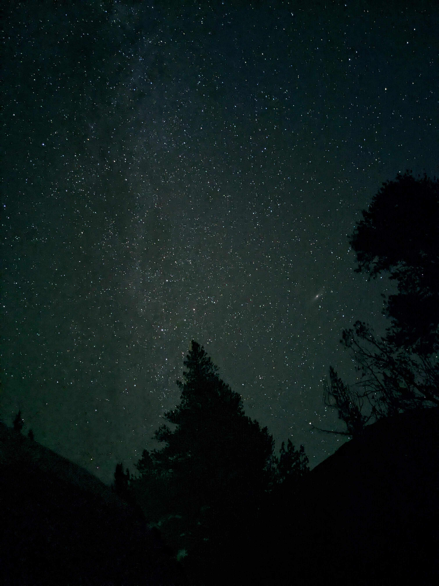
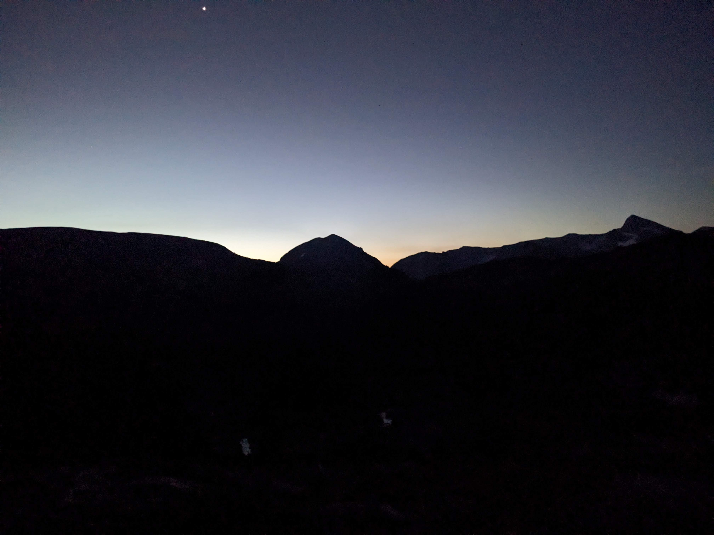
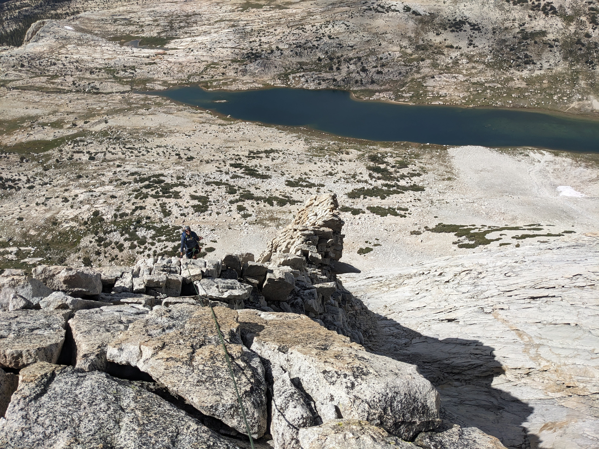
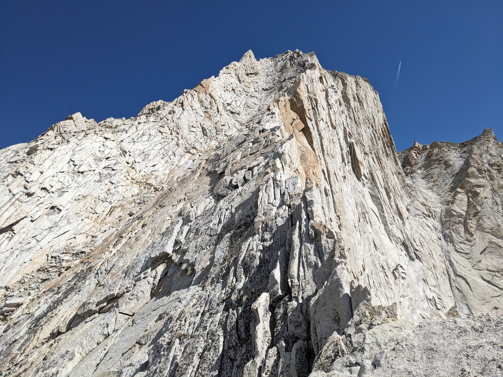
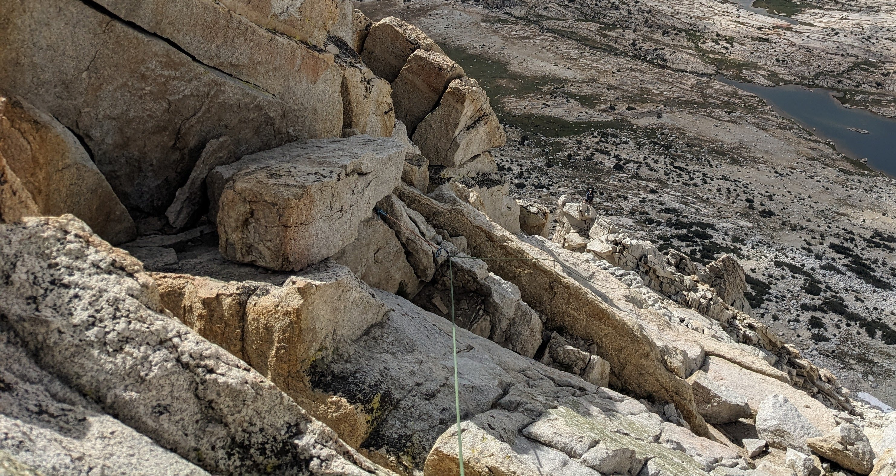

This was my third time on Conness intending to climb the west ridge, and the first time that I actually got to do some technical climbing on it. Jacob and I got out of the Bay area at midday on a Friday and drove up to Tuolumne. We climbed a quick route on Dozier Dome and continued to Saddlebag Campground just outside the eastern gate to Yosemite. The campground was already closed for the season, so we had our pick of sites. All of the sites are walk in; some are farther than others, up to about a half mile at the farthest. There are sometimes communal carts to carry camping gear, but they were stowed for the season this time.


Taking lessons from prior attempts, we got an early start; the approach always takes longer than one would hope. The approach starts with 4 trail miles, followed by 2000 feet of off official trail, much of it scrambling. 3rd class scrambling tops out at a broad plateau; the summit route ascends a narrow ridge, while the approach for the West Ridge descends a dirty gully and then crosses a talus/boulder field. I had bailed on the route some years prior after staring down the gulley descent and up at the gathering storm clouds.
The gulley was not fun, but far from the worst I've experienced. It's not as bad as it looks; or possibly I had built it up in my mind over the years after having decided not to quest down it. 30 minutes of rock hopping brought us to the base of the route. The 5.6 crux comes in the first few pitches getting up onto the ridge. Jacob and I swung leads for a few pitches, getting into the groove. Once we were on the main ridge, we began simul-climbing in large blocks, trying to stay on the sharp edge of the ridge for the best climbing.



Eventually, the climbing eased off and we realized that we were barely placing gear anymore, and so we declared the climb to be done and uproped for the remaineder of the climb. This route is a delightful romp, though the long day and rough approach make it a bit of an ordeal on the whole. Still, I would be thrilled do to this one again.